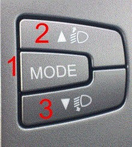

This function is a description of a manual procedure that is performed in the main instrument.
The display can show the following languages: Italian, English, German, Portuguese, Spanish, French, and Dutch.
The instrument is connected to 3 external switches, located on the right side of the radio, see figure.

Description of function of each button:
MODE: Press the button briefly to open the menu and/or scroll in the menu or confirm selection. Long press or if no button is pressed for 1 minute returns the display to standard mode.
Arrow up: Scrolls up in the menu or increases displayed values.
Arrow down: Scrolls down in the menu or decreases displayed values.
Note:
All instruments are not equipped with the function for changing language.
The menu's functions are only activated when the vehicle is stationary.
Test conditions:
Ignition on.
Procedure:
Navigate to the language menu.
Brief press of the MODE-button, now the display flashes with the latest selected language.
Select language with buttons 2 or 3.
Brief press of the MODE-button to save the selected language.